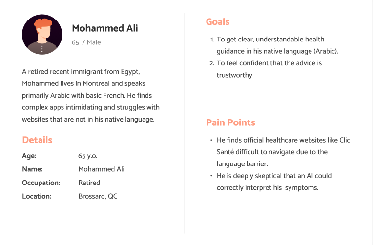
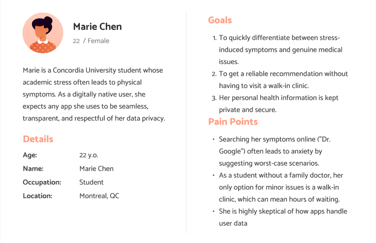
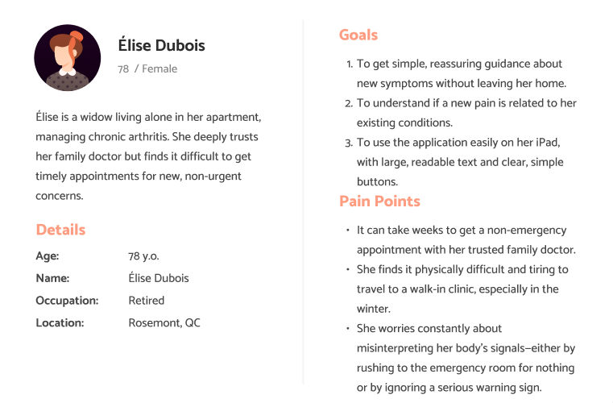
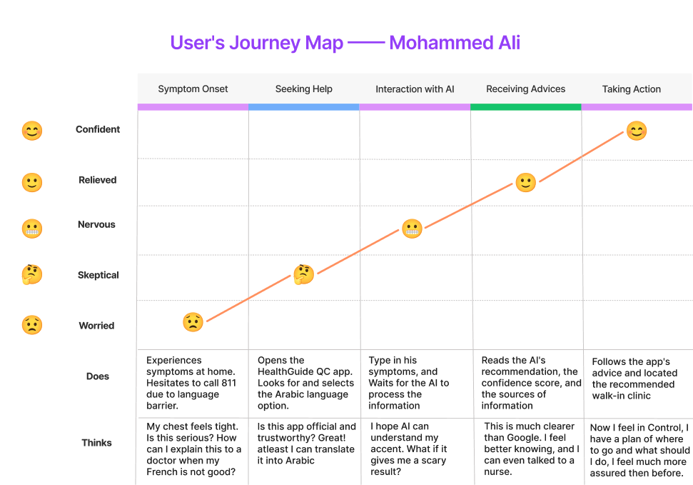
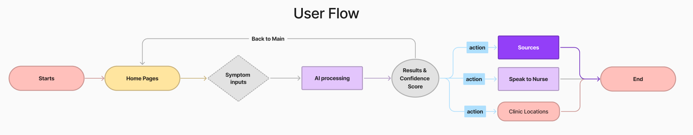

Designing a Trustworthy AI-Powered Healthcare Triage Assistant
Building Trust Through Transparent AI
Empowering Quebec's citizens to make informed decisions about their health.
Understanding the Problem
There exists a big demand in Quebec for access to quality healthcare services. An important part of successfully helping patients efficiently and effectively are the entrance services offered to them. Elements like preliminary health assessments, early diagnosis, and clear communication of medical information are key when giving a good medical service. However, It has always been difficult and ambiguous to give these initial services to patients because of how each person it’s its own world, as every patient could present different conditions that could be very hard to generalize.
In our current times, Artificial Intelligence (AI) seems like a very promising tool to help patients with these entrance services, as, if optimized correctly, they are good at understanding complex health information. Additionally, people seem to be more and more familiar with interacting with AI in chatbots. Yet, even though they could be useful and provide insights, they are still chatbots which lack humanity. An AI chatbot for these services faces unique challenges such as: trust, safety, and transparency. Things that we, humans, value a lot.
HealthGuide QC is an AI-powered chatbot implemented by the Ministère de la Santé et des Services sociaux du Québec which seeks to be a robust entrance service for patients in the province tackling the core challenges mentioned above. It is a service which will build trust through being fine-tuned with verified medical information and clear communication for non-technical people, ensure safety by securely handling personal health data and providing reliable guidance, and promote transparency by clearly explaining how recommendations are generated and when human professionals should be consulted.
Research
In order to produce a valuable solution, it was fundamental to understand Quebec’s healthcare challenges, as well as the market and existing technologies for healthcare entrance assistance.
Quebec’s healthcare system faces critical challenges such as long waiting lists, high job vacancy rates, and a growing patient demand due to an aging population. These challenges highlight a need for more efficient services and solutions that could amend the current gap in supply and demand. Therefore, we believe that implementing AI technologies to support healthcare services in the province is well justified.
Our research in AI chatbots in healthcare showed that these tools improve: accessibility, efficiency and patient satisfaction, while reducing administrative workloads. However, there are serious challenges such as privacy, safety and lack of empathy in AI-human interactions. These insights should directly influence the system’s design, prioritizing trust, safety, and transparency as core principles.
In terms of competitors or similar applications in Canada, TELUS Health MyCare (formerly Babylon by TELUS Health) highlights. It offers AI-powered symptom checking and virtual consultations for TELUS clients, with a focus on secure data handling. Key insights from this application for our construction of HealthGuide QC include:
Offer bilingual (English & French) support for Quebec users.
Provide AI tools while maintaining clear pathways to human doctors.
Embed robust privacy measures aligned with Canadian data protection laws.
Maintain a professional, empathetic interface for creating trust.
Furthermore, there are other healthcare chatbots which functionalities provide good guidance to HealthGuide QC:
Ada Health: Broad medical advice and symptom analysis powered by AI in 6+ health categories and 7+ languages. Includes recurrent health articles as additional content.
Buoy Health: Broad medical advice and symptom analysis, it includes expert guided plans for 16+ symptoms.
Keenethics’ OneRemission: Chatbot with health tracking for cancer patients with connection to 24/7 human oncologists.
Sensely’s Molly: AI-powered nurse that gives medical advice and symptom analysis. Uses triage system to detect emergencies.
References:
Laymouna, M., et al. (2024). Roles, Users, Benefits, and Limitations of Chatbots in Health Care: Rapid Review. PMC, https://pmc.ncbi.nlm.nih.gov/articles/PMC11303905/
Statistique Québec.(2023). A portrait of job vacancy rates in the Québec health care and social assistance industry.
TELUS Health. (2019). New app from TELUS Health and Babylon enables Canadians to visit a doctor through their smartphone. https://www.telus.com/en/health/press-releases/new-app-telus-health-babylon-enables-canadians-visit-doctor-smartphone
Dilmegani, C. (2025). Top 10 chatbots in healthcare: Insights & use cases. AIMultiple. https://research.aimultiple.com/chatbot-healthcare/
User Personas
To ground our design in real-world needs, we developed three personas representing key user groups in Quebec: a new immigrant facing language barriers, a digitally-native student managing stress, and an elderly citizen seeking accessible care.



Empathy Maps
To deepen our understanding of our users, we developed empathy maps for each persona, breaking down what they think, feel, say, and do.
Mohammed Ali
SAYS
"My chest feels tight."
"How do I explain this in French?"
"This is clearer than Google."
THINKS
"Is this serious?"
"Can I trust an AI with this?"
"I feel much more assured now."
DOES
Hesitates to call 811.
Selects Arabic language option.
Reads AI recommendation.
Finds a walk-in clinic.
FEELS
Worried & Skeptical
Nervous
Relieved
Confident & Empowered
Marie Chen
SAYS
"Is this just stress again?"
"I can't wait hours at a clinic."
"Is my personal data secure?"
THINKS
"Online searches will just scare me."
"I need a fast, reliable answer."
"I hope this is more useful than WebMD."
DOES
Anxiously searches symptoms online.
Reads app privacy policies.
Enters symptoms during a study break.
FEELS
Stressed & Anxious
Skeptical about data privacy.
Seeks reassurance and efficiency.
Élise Dubois
SAYS
"Is this new pain related to my arthritis?"
"It's so hard to get a quick appointment."
"I hope the text is large enough to read."
THINKS
"I don't want to be a burden."
"Is this serious enough for the ER?"
"I trust my doctor, but he's so busy."
DOES
Uses her iPad to browse the web.
Worries about new symptoms alone.
Asks her family for help with tech.
FEELS
Worried & Uncertain
Frustrated with long wait times.
Seeks simple, trustworthy guidance.
User Journeys & Flows
This section illustrates the emotional and behavioral flow of Mohammed Ali, our persona for a new immigrant. It highlights how his initial anxiety transforms into confidence as he interacts with HealthGuide QC. This is followed by a storyboard and user flow diagram that apply to all users.
User Journey Map: Mohammed Ali

Storyboard: Mohammed's Experience
This storyboard visually narrates Mohammed's journey, from initial worry to final confidence, highlighting key interactions with HealthGuide QC.
Panel 1: The Problem
Worry & Hesitation Mohammed feels chest tightness. He's worried but hesitates to call for help due to the language barrier.
Panel 2: The Solution
Discovering the App He opens HealthGuide QC on his phone and is relieved to find a language option for Arabic.
Panel 3: Interaction
Entering Symptoms He types his symptoms into the clear interface, feeling nervous but hopeful for a clear answer.
Panel 4: The Result
Clarity & Trust The AI provides a clear recommendation, a confidence score, and sources. This builds his trust.
Panel 5: Taking Action
Finding Care Following the app's advice, he uses the clinic locator to find a recommended walk-in clinic nearby.
Panel 6: The Outcome
Empowerment With a clear plan, Mohammed leaves home feeling confident and in control of his health situation.
User Flow Diagram
The user flow diagram visualizes the core navigation path within HealthGuide QC, showing how a user moves from symptom input to AI-generated recommendations and clear, actionable next steps.

Design Process: From Sketch to Wireframe
Our design process began with low-fidelity sketches to explore different layouts for the critical Results screen, followed by mid-fidelity wireframes to solidify the structure. This iterative process ensures the final design is both intuitive and user-centric.
Step 1: Low-Fidelity Sketches
Iteration A: Horizontal Actions
Recommendation Text...
Confidence: 85%
Btn 1
Btn 2
Btn 3
Iteration B: Vertical Actions
Recommendation Text...
Confidence: 85%
Action 1
Action 2
Action 3
Decision: We chose a layout inspired by Iteration A, as placing primary actions at the bottom is more ergonomic for mobile users.
Step 2: Mid-Fidelity Wireframe
Primary Recommendation
Confidence Score
Sources
Speak to Nurse
Clinic Locations
This wireframe solidifies the information hierarchy and layout, focusing on structure before applying visual design. The main recommendation is given top priority, followed by the trust-building confidence score, and finally, clear, actionable next steps.
Task Analysis
We created a detailed task analysis for the primary user goal: getting a recommendation for a new symptom. This helps ensure every step of the process is logical and meets user expectations.
Step #
User Action
System Feedback / Interface
User's Thoughts / Feelings
1
Opens the HealthGuide QC app.
App loads to the Home Page with a clear "Start Symptom Check" button.
"Okay, let's figure this out." (Goal-oriented)
2
Taps "Start Symptom Check".
Transitions to a clean, simple chat interface or input form.
"This looks straightforward." (Hopeful)
3
Types symptoms into the input field.
Text appears in the input field as the user types.
"I hope I'm describing this correctly." (Anxious)
4
Taps the "Submit" or "Send" button.
An animation appears: "AI is processing your information..."
"Please don't tell me it's something terrible." (Nervous)
5
Reads the AI recommendation and confidence score.
Recommendation is in plain language. A confidence percentage is visible.
"Okay, 85% confidence... that seems reliable." (Evaluating Trust)
6
Examines the next-step actions.
Buttons for "Sources," "Speak to Nurse," and "Clinic Locations" are presented.
"It's good I have options. Finding a clinic seems right." (Relieved, Decisive)
Evidence of User Research
While we did not conduct live interviews for this project, our design decisions were guided by the anticipated responses of our target users, as synthesized from our persona research. The following simulated quotes reflect the core needs we aimed to address and informed our user-centric approach.
"Searching my symptoms online is a nightmare—it always leads to the worst-case scenario. I just want a reliable, quick way to know if something is serious without having to wait for hours at a clinic."
"Official websites are difficult, especially when French isn't your first language. An application that could understand me in Arabic and give me clear guidance would be an incredible relief."
"It takes weeks to see my family doctor. I worry about new pains, but I don't want to rush to the emergency room for nothing. I need simple, reassuring advice I can trust from my home."
User Requirements
Based on our research and user personas, we defined a core set of requirements to ensure HealthGuide QC is trustworthy, accessible, and effective.
Multilingual: Supports conversations in multiple languages to serve Quebec's diverse population.
Clarity: Delivers medical information in simple, non-technical language.
Availability: Provides 24/7 access to initial health guidance.
Assessment: Guides users through symptom checks to provide transparent, AI-driven insights.
Security: Implements strong privacy measures compliant with Canadian regulations.
Usability: Features an intuitive, accessible design for all technical skill levels.
Trust: Provides reliable guidance with confidence scores and verifiable sources to build user confidence.
Next Steps: Clearly directs users to the appropriate next level of care (e.g., nurse, clinic, doctor).